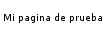

El Lenguaje de Marcado de Hipertexto (HTML) es el código que se utiliza para estructurar y desplegar una página web y sus contenidos. Por ejemplo, sus contenidos podrían ser párrafos, una lista con viñetas, o imágenes y tablas de datos. Como lo sugiere el título, este artículo te dará una comprensión básica de HTML y cúal es su función.
Entonces, ¿qué es HTML en realidad?
HTML no es un lenguaje de programación; es un lenguaje de marcado que define la estructura de tu contenido. HTML consiste en una serie de elementos que usarás para encerrar diferentes partes del contenido para que se vean o comporten de una determinada manera. Las etiquetas de encierre pueden hacer de una palabra o una imagen un hipervínculo a otro sitio, se pueden cambiar palabras a cursiva, agrandar o achicar la letra, etc. Por ejemplo, toma la siguiente línea de contenido:
Mi gato es muy gruñonSi quieres especificar que se trata de un párrafo, podrías encerrar el texto con la etiqueta de párrafo (<p>):
<p>Mi gato es muy gruñon</p>Anatomía de un elemento HTML
Explora este párrafo en mayor profundidad.

Las partes principales del elemento son:
- La etiqueta de apertura: consiste en el nombre del elemento (en este caso, p), encerrado por paréntesis angulares (< >) de apertura y cierre. Establece dónde comienza o empieza a tener efecto el elemento —en este caso, dónde es el comienzo del párrafo—.
- La etiqueta de cierre: es igual que la etiqueta de apertura, excepto que incluye una barra de cierre (/) antes del nombre de la etiqueta. Establece dónde termina el elemento —en este caso dónde termina el párrafo—.
- El contenido: este es el contenido del elemento, que en este caso es sólo texto.
- El elemento: la etiqueta de apertura, más la etiqueta de cierre, más el contenido equivale al elemento.
Los elementos pueden también tener atributos, que se ven así:

Los atributos contienen información adicional acerca del elemento, la cual no quieres que aparezca en el contenido real del elemento. Aquí class es el nombre del atributo y editor-note el valor del atributo. En este caso, el atributo class permite darle al elemento un nombre identificativo, que se puede utilizar luego para apuntarle al elemento información de estilo y demás cosas.
Un atributo debe tener siempre:
- Un espacio entre este y el nombre del elemento (o del atributo previo, si el elemento ya posee uno o más atributos).
- El nombre del atributo, seguido por un signo de igual (=).
- Comillas de apertura y de cierre, encerrando el valor del atributo.
Los atributos siempre se incluyen en la etiqueta de apertura de un elemento, nunca en la de cierre.
Nota: el atributo con valores simples que no contengan espacios en blanco ASCII (o cualesquiera de los caracteres " ' ` = < >) pueden permanecer sin entrecomillar, pero se recomienda entrecomillar todos los valores de atributo, ya que esto hace que el código sea más consistente y comprensible.
Anidar elementos
Puedes también colocar elementos dentro de otros elementos —esto se llama anidamiento—. Si, por ejemplo, quieres resaltar una palabra del texto (en el ejemplo la palabra «muy»), podemos encerrarla en un elemento <strong>, que significa que dicha palabra se debe enfatizar:
<p>Mi gato es <strong>muy</strong> gruñon.</p>Debes asegurarte que los elementos estén correctamente anidados: en el ejemplo de abajo, creaste la etiqueta de apertura del elemento <p> primero, luego la del elemento <strong>, por lo tanto, debes cerrar esta etiqueta primero, y luego la de <p>. Esto es incorrecto:
<p>Mi gato es <strong>muy gruñon.</p></strong>Los elementos deben abrirse y cerrarse ordenadamente, de forma tal que se encuentren claramente dentro o fuera el uno del otro. Si estos se encuentran solapados, el navegador web tratará de adivinar lo que intentas decirle, pero puede que obtengas resultados inesperados. Así que, ¡no lo hagas!
Elementos vacíos
Algunos elementos no poseen contenido, y son llamados elementos vacíos. Toma, por ejemplo, el elemento <img> de nuestro HTML:
<img src="images/firefox-icon.png" alt="Mi imagen de prueba">Posee dos atributos, pero no hay etiqueta de cierre </img> ni contenido encerrado. Esto es porque un elemento de imagen no encierra contenido al cual afectar. Su propósito es desplegar una imagen en la página HTML, en el lugar en que aparece.
Anatomía de un documento HTML
Hasta ahora has visto lo básico de elementos HTML individuales, pero estos no son muy útiles por sí solos. Ahora verás cómo los elementos individuales son combinados para formar una página HTML entera. Vuelve a visitar el código de tu ejemplo en index.html (que viste por primera vez en el artículo Manejo de archivos):
<!DOCTYPE html>
<html>
<head>
<meta charset="utf-8">
<title>Mi pagina de prueba</title>
</head>
<body>
<img src="images/firefox-icon.png" alt="Mi imagen de prueba">
</body>
</html>Tienes:
<!DOCTYPE html>— el tipo de documento. Es un preámbulo requerido. Anteriormente, cuando HTML era joven (cerca de 1991/2), los tipos de documento actuaban como vínculos a un conjunto de reglas que el código HTML de la página debía seguir para ser considerado bueno, lo que podía significar la verificación automática de errores y algunas otras cosas de utilidad. Sin embargo, hoy día es simplemente un artefacto antiguo que a nadie le importa, pero que debe ser incluido para que todo funcione correctamente. Por ahora, eso es todo lo que necesitas saber.<html></html>— el elemento<html>. Este elemento encierra todo el contenido de la página entera y, a veces, se le conoce como el elemento raíz (root element).<head></head>— el elemento<head>. Este elemento actúa como un contenedor de todo aquello que quieres incluir en la página HTML que no es contenido visible por los visitantes de la página. Incluye cosas como palabras clave (keywords), una descripción de la página que quieres que aparezca en resultados de búsquedas, código CSS para dar estilo al contenido, declaraciones del juego de caracteres, etc.<meta charset="utf-8">—<meta>. Este elemento establece el juego de caracteres que tu documento usará enutf-8, que incluye casi todos los caracteres de todos los idiomas humanos. Básicamente, puede manejar cualquier contenido de texto que puedas incluir. No hay razón para no establecerlo, y puede evitar problemas en el futuro.<title></title>— el elemento<title>establece el título de tu página, que es el título que aparece en la pestaña o en la barra de título del navegador cuando la página es cargada, y se usa para describir la página cuando es añadida a los marcadores o como favorita.<body></body>— el elemento<body>. Encierra todo el contenido que deseas mostrar a los usuarios web que visiten tu página, ya sea texto, imágenes, videos, juegos, pistas de audio reproducibles, y demás.
Imágenes
Presta atención nuevamente al elemento imagen <img>:
<img src="images/firefox-icon.png" alt="Mi imagen de prueba">Como ya se dijo antes, incrusta una imagen en la página, en la posición en que aparece. Lo logra a través del atributo src (source), el cual contiene el path (ruta o ubicación) de tu archivo de imagen.
También se incluye un atributo alt (alternative) el cual contiene un texto que debería describir la imagen, y que podría ser accedido por usuarios que no pueden ver la imagen, quizás porque:
- Son ciegos o tienen deficiencias visuales. Los usuarios con impedimentos visuales usualmente utilizan herramientas llamadas Lectores de pantalla (Screen Readers), los cuales les leen el texto contenido en el atributo alt.
- Se produjo algún error en el código que impide que la imagen sea cargada. Como ejemplo, modifica deliberadamente la ubicación dentro del atributo
srcpara que este sea incorrecto. Si guardas y recargas la página, deberías ver algo así en lugar de la imagen:

La frase clave acerca del texto alt de arriba es «texto que debería describir la imagen». El texto alt debe proporcionarle al lector la suficiente información como para que este tenga una buena idea de qué muestra la imagen. Por lo que tu texto actual «Mi imagen de prueba» no es para nada bueno. Un texto mucho mejor para el logo de Firefox sería: «El logo de Firefox: un zorro en llamas rodeando la Tierra».
Prueba a dar con mejores textos alt para tu imagen.
Nota: Descubre más acerca de la accesibilidad en el módulo de aprendizaje sobre la accesibilidad.
Marcado de texto
Esta sección cubrirá algunos de los elementos HTML básicos que usarás para el marcado de texto.
Encabezados
Los elementos de encabezado permiten especificar que ciertas partes del contenido son encabezados, o subencabezados del contenido. De la misma forma que un libro tiene un título principal, y que a su vez puede tener títulos por cada capítulo individual, y subtítulos dentro de ellos, un documento HTML puede tenerlos también. HTML posee seis niveles de encabezados, <h1>–<h6>, aunque probablemente solo llegues a usar 3-4 como mucho:
<h1>Mi título principal</h1>
<h2>Mi título de nivel superior</h2>
<h3>Mi subtítulo</h3>
<h4>Mi sub-subtítulo</h4>Intenta ahora añadir un título apropiado para tu página HTML, antes de tu elemento <img>.
Nota: verás que el encabezamiento de nivel 1 tiene un estilo implícito. No utilices elementos de encabezado para hacer el texto más grande o más oscuro, porque este elemento se utiliza por accesibilidad y otras razones como el posicionamiento en buscadores (Search Engine Optimization, SEO). Intenta crear una secuencia significativa de encabezados en tus páginas, sin saltarte niveles.
Párrafos
Como se explicó más arriba, los elementos <p> se utilizan para encerrar párrafos de texto; los usarás frecuentemente para el marcado de contenido de texto regular:
<p>Este es un simple parrafo</p>Agrega uno o algunos párrafos a tu texto de ejemplo (deberías tenerlo de cuando estudiaste ¿Cuál será la apariencia de tu sitio web?), colocados directamente debajo del elemento <img>.
Listas
Mucho del contenido web está dado por listas, así que HTML tiene elementos especiales para ellas. El marcado de listas se realiza siempre en al menos dos elementos. Los dos tipos de listas más comunes son las listas ordenadas y las desordenadas:
- Las listas desordenadas son aquellas en las que el orden de los items no es relevante, como en una lista de compras. Estas son encerradas en un elemento
<ul>(unordered list). - Las listas ordenadas son aquellas en las que el orden sí es relevante, como en una receta. Estas son encerradas en un elemento
<ol>(ordered list).
Cada elemento de la lista se coloca dentro de un elemento <li> (list item).
Por ejemplo, si quieres transformar parte del siguiente párrafo en una lista:
<p>En Mozilla, somos una comunidad de tecnólogos, pensadores, y constructores que trabajan juntos... </p>Podrías hacer lo siguiente:
<p>En Mozilla, somos una comunidad de</p>
<ul>
<li>tecnólogos</li>
<li>pensadores</li>
<li>constructores</li>
</ul>
<p>trabajando juntos... </p>Intenta agregar una lista ordenada o desordenada en tu página de ejemplo.
Vínculos
Los vínculos o enlaces son muy importantes —son los que hacen de la web, la web—. Para implementar un vínculo, necesitas usar un vínculo simple — <a> — la a es la abreviatura de la palabra inglesa «anchor» («ancla»). Para convertir algún texto dentro de un párrafo en un vínculo, sigue estos pasos:
- Elige algún texto. Nosotros elegimos «Manifesto Mozilla».
- Encierra el texto en un elemento <a>, así:
<a>Manifesto Mozilla</a> - Proporciónale al elemento <a> un atributo href, así:
<a href="">Manifesto Mozilla</a> - Completa el valor de este atributo con la dirección web con la que quieras conectar al vínculo:
<a href="https://www.mozilla.org/es-AR/about/manifesto/">Manifesto Mozilla</a>
Podrías obtener resultados inesperados si al comienzo de la dirección web omites la parte https:// o http:// llamada protocolo. Así que luego del marcado del vínculo, haz clic en él para asegurarte que te dirige a la dirección deseada.
href podría parecer, en principio, una opción un tanto oscura para un nombre de atributo. Si tienes problemas para recordarla, recuerda que se refiere a hypertext reference (referencia de hipertexto).
Ahora agrega un vínculo a tu página, si es que aún no lo hiciste.
Conclusión
Si lograste seguir todas las instrucciones de este artículo, deberías terminar con una página que se vea así (también puedes verla aquí):

Si te estancas en algún paso, puedes comparar tu trabajo con el código de ejemplo terminado en Github.
Aquí realmente solo has rasguñado la superficie de HTML. Para aprender más, ve a la página de Aprendizaje HTML.